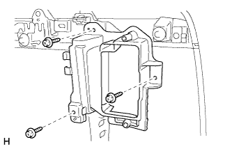
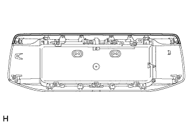

BACK DOOR OUTSIDE GARNISH > DISASSEMBLY |
| 1. REMOVE BACK DOOR ELECTRICAL KEY SWITCH |
 |
Detach the clamp.
 |
Remove the 2 screws.
Detach the 2 guides and remove the back door electrical key switch.
| 2. REMOVE LICENSE PLATE LIGHT ASSEMBLY |
 |
Disconnect the connector.
Remove the 2 screws and lights.
| 3. REMOVE NO. 1 BACK DOOR GARNISH RETAINER |
|  |
Remove the 3 screws and No. 1 back door garnish retainer.
| 4. REMOVE BACK DOOR OUTSIDE GARNISH PROTECTOR |
|  |
For upper side:
Remove the back door outside garnish protector.
 |
For left and right side:
Remove the back door outside garnish protector.
 |
For lower side:
Remove the back door outside garnish protector.
| 5. REMOVE NO. 2 BACK DOOR OUTSIDE GARNISH |
Remove the 8 screws.
Detach the 2 claws and remove the No. 2 back door outside garnish.
| 6. REMOVE LOWER BACK DOOR OUTSIDE GARNISH |
Remove the 6 screws.
Detach the 2 claws and remove the lower back door outside garnish.